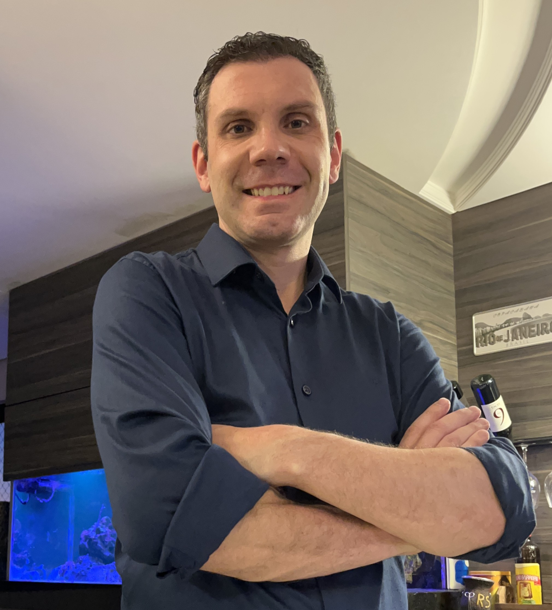

Formação Acadêmica
-
Curso: Engenharia de Produção;
Instituição: FTEC Bento Gonçalves;
Data de conclusão: Dezembro de 2024;
Principais aprendizados: Gestão de projetos, gestão de pessoas, análise de dados e indicadores, automação e tecnologia, planejamento de recursos e técnicas de melhoria contínua.
-
Curso: Carreira Desenvolvedor Full-Stack;
Instituição: www.alura.com.br;
Data de conclusão: Em andamento;
Principais aprendizados: HTML, CSS, JavaScript, WordPress e PHP.
-
Curso: PHP e MYSQL;
Instituição: Infoserv;
Data de conclusão: Em andamento;
Principais aprendizados: PHP e MYSQL.
-
Curso: PHP;
Instituição: www.cursemvideo.com.br;
Data de conclusão: Em andamento;
Principais aprendizados: PHP.
-
Curso: Desenvolvedor Back-end Python;
Instituição: www.ebac.com.br;
Data de conclusão: Novembro de 2024;
Principais aprendizados: Python, Nginx, Django REST Framework, Doker.
-
Curso: Linguagem Python;
Instituição: www.cursoemvideo.com.br;
Data de conclusão: Agosto de 2024;
Principais aprendizados: Python.
-
Curso: Planejamento e Controle de Produção - PCP;
Instituição: Cadmax;
Data de conclusão: Setembro de 2021;
Principais aprendizados: Gestão de estoque, gestão de capacidade, plenjamento de produção.
-
Curso: Engenharia Mecânica;
Instituição: Universidade de Caxias do sul - UCS;
Data de conclusão: Dezembro de 2015 (matrícula trancada);
Principais aprendizados: Calculos, materiais, desenho técnico.
-
Curso: Técnico em Mecânica Industrial;
Instituição: SENAI-Cetemo Bento Gonçalves;
Data de conclusão: Dezembro de 2011;
Principais aprendizados: Processos de fabricação, projetos de sistemas e automação, gestão de projeto e inovação.
-
Curso: Mecânica Industrial;
Instituição: SENAI-Cetemo Bento Gonçalves;
Data de conclusão: Dezembro de 2007;
Principais aprendizados: Fundamentos, processos de fabricação, segurança no trabalho e manutenção
